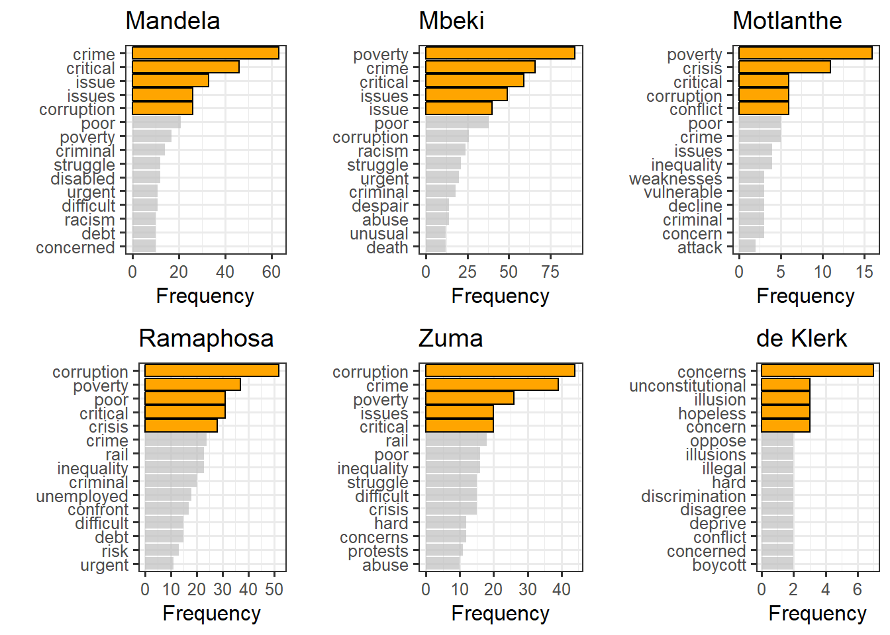
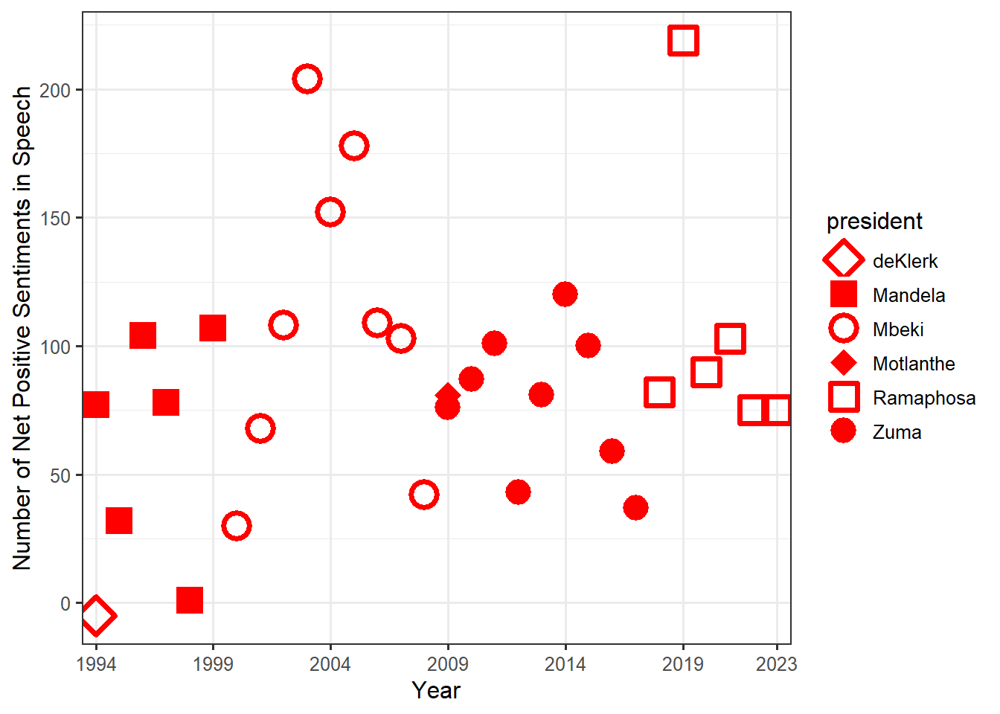

Template
Abstract
Introduction
The aim of this assignment is to provide a descriptive analysis of the State of the Nation speeches in South Africa between 1994 and 2022. This descriptive analysis is performed using sentiment analysis and topic modelling. Sentiment analysis aims to describe the content of text in terms of its ‘emotions’ (REFERENCE). The purpose of performing sentiment analysis on these speeches is to identify the overall tone or emotion of the speech and identify how this might change over time or as presidents change. Topic modelling is a technique that aims to summarize text, in this case speeches, in terms of a number of topics. It is a way of categorizing speeches into different topics and identifying the main themes of a body of text (REFERENCE). This is of interest in order to identify what topics or themes are important in the context of the government of South Africa and how these themes or main topics may change over time or over different presidents.
Before the analysis is applied to the data a brief literature review will be given. Following this the data and any cleaning that was done will be discussed. The methods for performing sentiment analysis and topic modelling will be outlined. Finally the results of the analysis on the SONA speeches data will be presented and discussed.
Chat GPT was used as an aid to this assignment. The purpose of this was to experiment large language models and to assess Chat GPT’s ability to assist with the assignment. A brief summary of how well it did and how it responded to different prompts and guides in given in Appendix A (which can be found on Appendix A tab of this website).
Literature Review
Sentiment Analysis
Topic Modelling
Data
As mentioned, the data for this analysis is a collection of 36 speeches delivered as State of the Nation Addresses between 1994 and 2022. These speeches were delivered by 6 different presidents: de Klerk, Mandela, Mbeki, Motlanthe, Zuma and Ramaphosa.
This data needed to be cleaned before sentiment analysis or topic modelling could be done. The data was cleaned by removing punctuation marks and numbers from the speeches. Stop words, which are common words such as ‘the’, ‘and’ and ‘they’ were also removed from the speeches.
In order to perform sentiment analysis the speeches needed to be tokenized into shorter parts such as bigrams and words in order to assess the sentiment of each smaller part and then aggregate these sentiments to understand the sentiment of the speech as a whole. The speeches are tokenized first into sentences and then into words using the unnest_tokens() function in R.
- Explain why bigrams were necessary and how this worked - Were stop words not removed?? Because we need not and no etc
How was data structured for topic modelling??
Methods
Sentiment Analysis
In order to perform sentiment analysis, sentiment lexicons are used. These lexicons contain many words which are labelled according to their sentiment. The main lexicon that was made use of here for analysis was the bing dictionary which labels words as positive or negative. The affin dictionary gives each word a score between negative five and five, from negative to positive sentiments.
In order to get each words sentiment, the data frame containing individual words, with an associated president, year ans sentence ID is left joined with the bing lexicon in order to get their associated positive or negative sentiment. Because many of the words in the speeches are not in the dictionary, these words are assigned with a sentiment value of neutral instead of removing them from analysis. This is not an ideal situation as it may mean that words which are very emotively loaded are being assigned as neutral and so one could miss the true sentiment of a sentence or speech however it is better than removing all these words from the analysis completely.
In order to analyze the sentiment of different presidents we can consider each presidents most commonly used positive and negative words which can be found using filtering by president and filtering by positive or negative sentiment.
In addition one can consider how sentiment changes over time and by president by considering the number of positive and negative sentiment associated words and seeing how this changes over time. This can also be done using the filter() function and filtering by year. In this way one can see if the percentage of positive sentiment in a speech increased or decreased as well as identify the net sentiment of the SONA speeches over time.
- NEED TO ADD BIGRAMS SECTION OF SENTIMENT ANALYSIS
Topic Modelling
Add topic modelling methods and explain LDA.
Results and Discussion
Having outlined the methods used to perform sentiment analysis and topic modelling, the results and analysis of the speeches is now given.
Sentiment Analysis
Individual Words
Figure 1 below shows the most common positive words used by each president. A number of words stand out here. “Regard” is used very frequently by Mandela, Mbeki and Motlanthe while Zuma and Ramaphosa both say “support” often. Mandela and de Klerk’s most common words are similar in terms of theme, examples being “freedom”, “peaceful” and “reconciliation”. These types of positive words are expected from these two presidents who were in office at the end of apartheid in South Africa.
It can also be noted that Ramaphosa and Zuma share similar positive words including “reform”, “improve”, “sustainable” and “progress” which indicates where much of their positive focus lies introducing new reforms or advocating for economic improvements and sustainable economic policy.
- NOT SURE WHAT ELSE STANDS OUT HERE?
Figure 1: The most commonly used positive words used by each president.
Figure 2 below shows the most frequently used negative word by each president. Again here, as with the positive sentiment words, a couple words stand out which can highlight what the major issues at the time of each presidency. For Mbeki and Motlanthe, the most common negative sentiment word is poverty which indicates that that was a large problem at the time of their presidency or a negative aspect of the country that was focused on significantly in their speeches. Ramaphosa and Zuma use “corruption” many times in their speeches and this again points to what was regarded by them as a major negative issue to be addresses. In addition to corruption they both also speak of crime and poverty fairly frequently.
- ADD SOME MORE HERE BUT NOT TOO SURE WHAT

Figure 2: The most commonly used negative words used by each president.
Having considered overall the most commonly used positive and negative words by each president which gives an idea of what the positive and negative issues of the country were at the time, sentiment changes over time are now considered. Figure A and B in Appendix 1 give the changes in positive and negative sentiment associated words over time. Figure 3 below gives the net change in sentiment overtime, where each president is represented by a different symbol shown in the legend. This net sentiment shows the net positive sentiments over negative sentiments. It is clear that overall most presidents have net positive speeches, using more positive than negative words. An exception to this is de Klerk where the value is just less than zero indicating more negative words than positive ones were said and Mandela’s 1998 speech had an almost equal amount of negative and positive words. It must again be noted that those words not present in the bing dictionary were set as neutral and so there may be words that would slightly change these net sentiment values.
Mbeki and Ramaphosa stand out as having the highest net positive sentiment. Between 2003 and 2005 the SONA speeches were significantly more positive than negative - WHY??
Ramaphosa 2019 State of the Nation address also has a high net positive value. This was the year that Ramaphosa was elected as president and before the start of the COVID-19 pandemic and so it makes intuitive sense that this specific speech of Ramaphosa’s was the largest in net positive sentiment as it was likely a hopeful speech talking about change that would come after Zuma’s presidency and attempted impeachment.
The speeches from 2020 to 2023 decreased significantly in net positive sentiment which makes sense due to the COVID-19 pandemic and its economic impact on the country. However overall these SONA speeches were still overall positive than negative but not as positive as Ramaphosa first official SONA as president (2019).
## Net Sentiment of Speech
wordsSentiment %>%
group_by(year, president, bing_sentiment) %>%
filter(bing_sentiment == "negative" | bing_sentiment == "positive") %>%
count(bing_sentiment) %>%
ungroup(bing_sentiment) %>%
mutate(netSent = n - first(n)) %>%
filter(bing_sentiment == "positive") %>%
ggplot(aes(x = year, y = netSent, shape = president)) +
geom_point(col = "red", size = 5, stroke = 2) +
xlab("Year") + ylab("Number of Net Positive Sentiments in Speech") +
theme_bw(base_size = 12) +
scale_x_discrete(name = "Year",
breaks = c("1994","1999","2004", "2009",
"2014", "2019", "2023")) +
scale_shape_manual(values = c(5, 15, 1, 18, 0, 16)) 
Figure 3: Net positive sentiment in speeches over the years.
FIgure 4 below gives the change in net positive sentiment over each of the presidents terms in office. For de Klerk and Motlanthe this is not applicable because they each only delivered one address. Mandela and Mbeki became increasing positive in their speeches over their presidencies which Zuma and Ramaphosa delivered speeches that were less and less positive. It is expected that Mandela and Mbeki would have become increasingly more positive as their presidencies covered a time in which democracy was new in South Africa and significant changes made in government from the apartheid era which increased positive sentiment in the country. In the case of Zuma a decrease in positive sentiment makes sense as particularly toward the end of his presidency he was facing numerous allegations of corruption which likely would have impacted his speech sentiment. As already mentioned the second year of Ramaphosa’s presidency saw the start of the pandemic which would have decreased the amount of positive sentiment in his speeches.